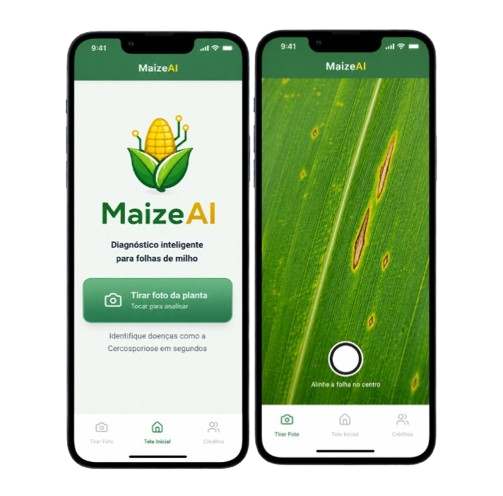

O MaizeAI utiliza Visão Computacional para analisar imagens de folhas de milho e informar se a planta apresenta sinais de doença ou está saudável, exibindo também o nível de confiança da análise.

O MaizeAI é um aplicativo desenvolvido para auxiliar na identificação de doenças em folhas de milho utilizando Inteligência Artificial.
Através da câmera do celular, o usuário captura uma imagem da folha e o sistema realiza uma análise automática, informando se ela foi classificada como Saudável ou Doente, juntamente com a probabilidade da classificação.
Tire uma foto da folha de milho utilizando a câmera do aplicativo.
A Inteligência Artificial processa a imagem utilizando técnicas de Visão Computacional.
O aplicativo informa se a folha está saudável ou apresenta sinais de doença, mostrando também a probabilidade da classificação.
Faça o download da versão mais recente do aplicativo e conheça o projeto.
⬇ Download APK *Aplicativo em desenvolvimento, sujeito a atualizações e melhorias futuras.